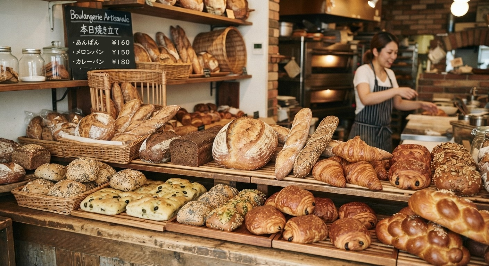
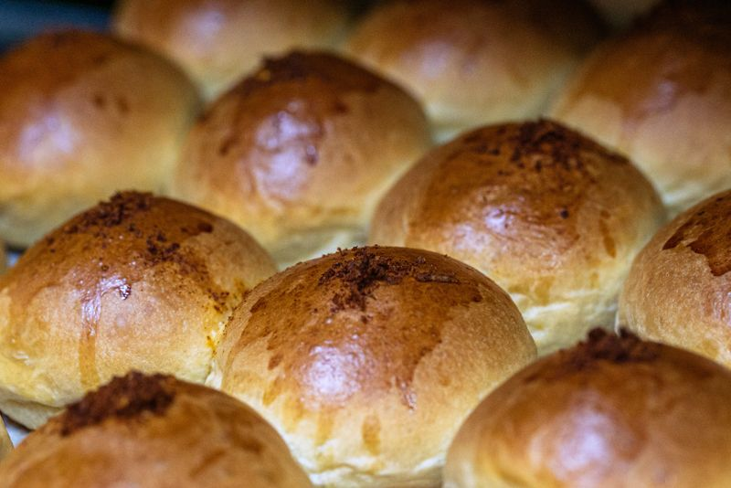
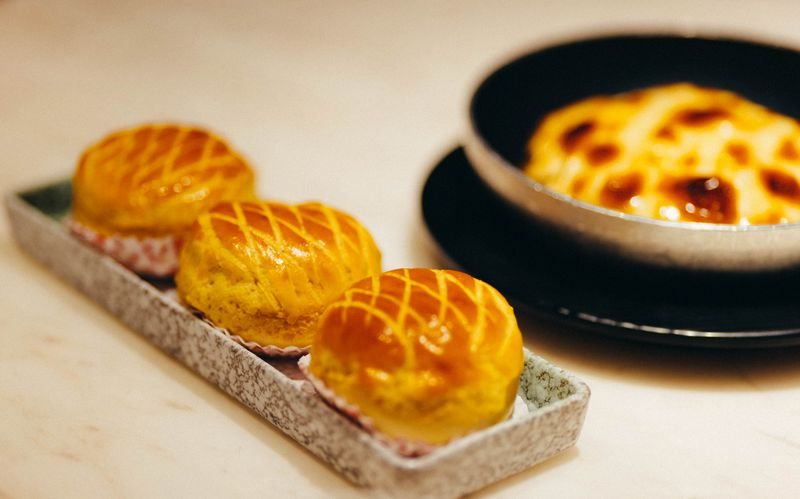
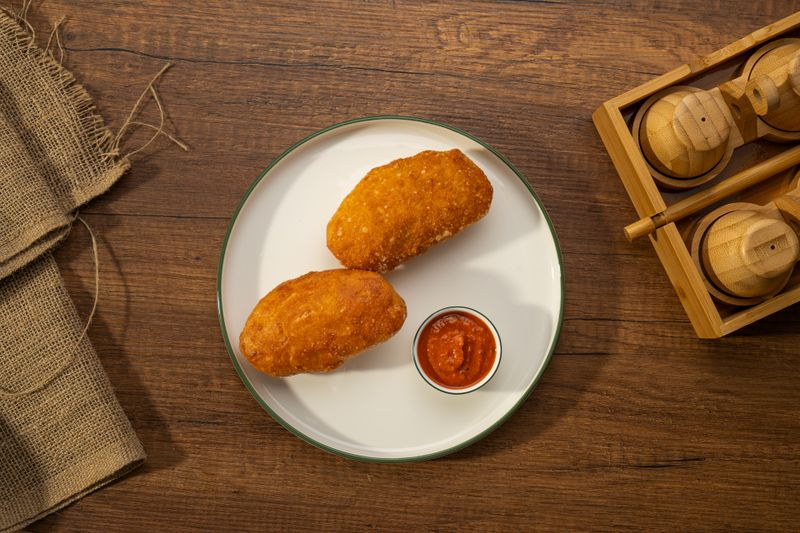
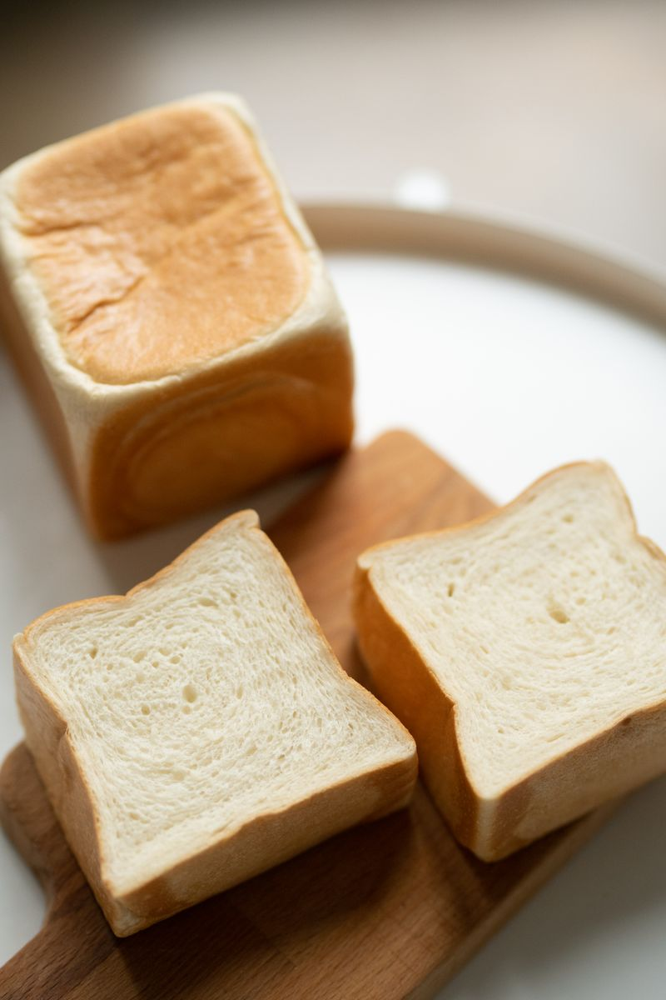
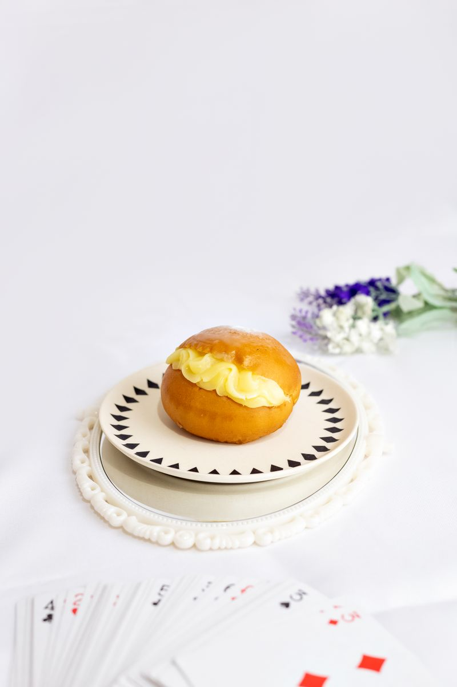
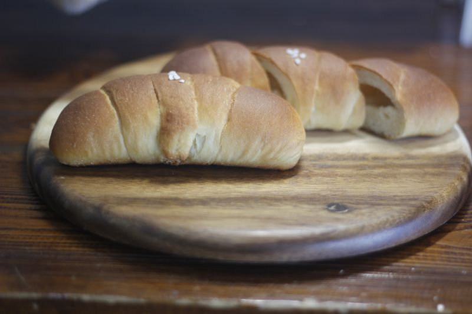

まるや製パン
焼きたて、できました！
創業 昭和三十八年
毎朝五時から、町のみなさんのパンを焼いています。

其の一
北の大地の小麦を、毎朝お店の石臼でひいています。
くわしく見る ▶
其の二
北海道小豆を三代目のおかみが前の晩からことこと炊きます。
其の三
毎日のおやつにできるよう、昔ながらのお値段を守っています。
パンを押すと、大きな写真と、合う飲み物・いっしょにおすすめのパンが見られます。

おかみの炊いたつぶあんがぎっしり。桜の塩漬けがのっています。
160円

さくさくのクッキー生地。焼きあがりの時間はすぐ売り切れます。
150円

店主こだわりの甘口カレー。揚げたてをどうぞ。
180円

ふんわりもちもち。厚切りトーストがおすすめです。
320円

たまごたっぷりの自家製カスタード入り。

ジャム・バター・ピーナッツからお選びください。その場で塗ります。
130円